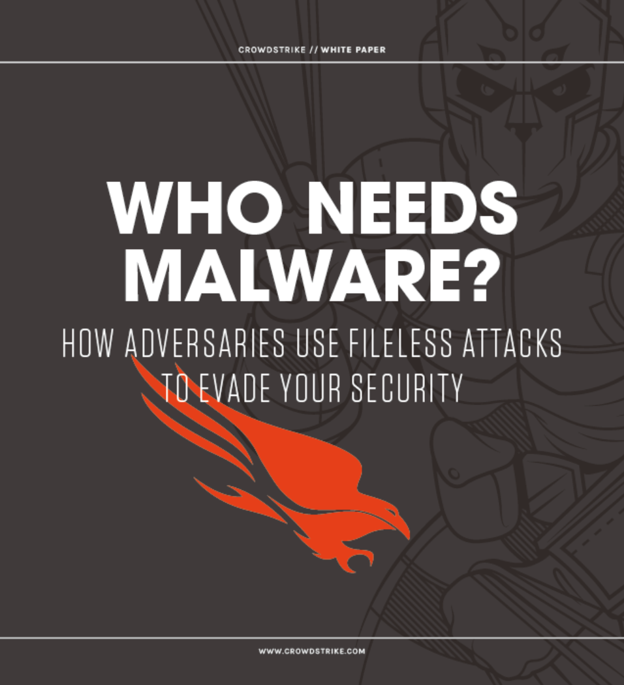
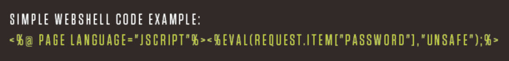
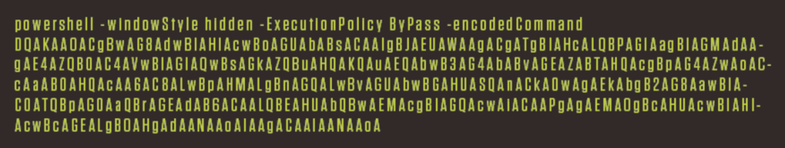
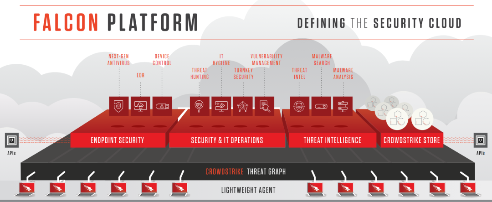
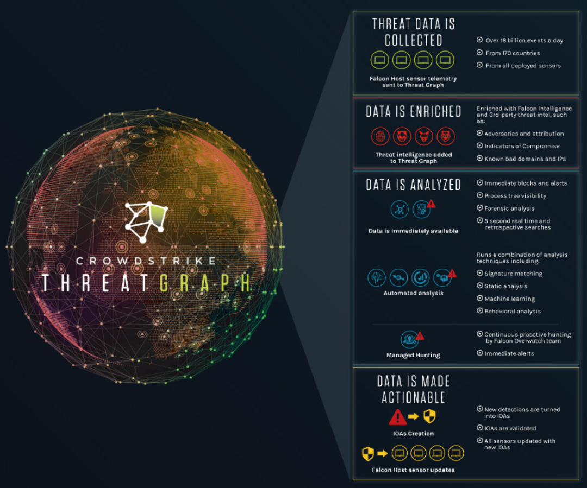
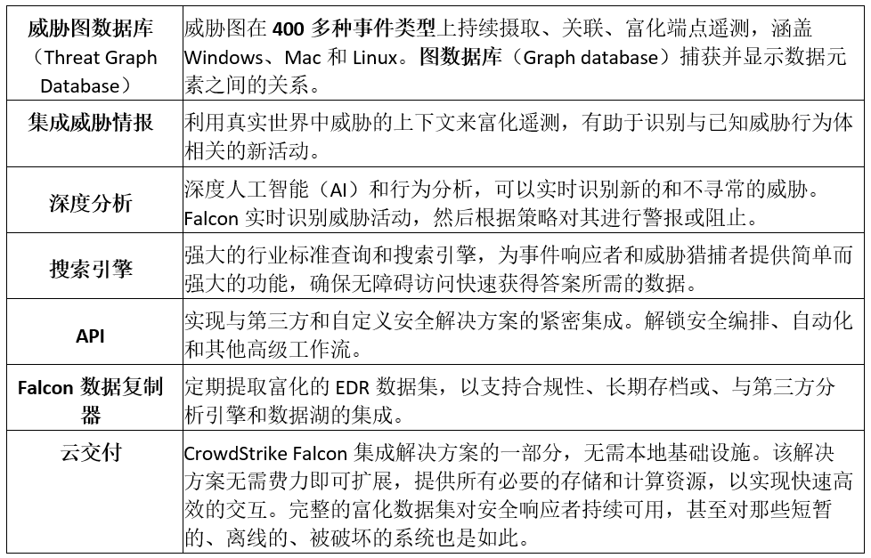
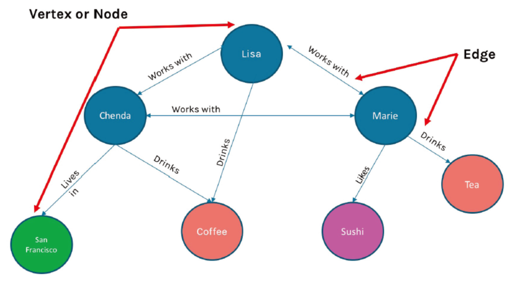

转载自微信公众号:网络安全观
本文内容仅供学习交流，如有侵权立即删除。
前言
CrowdStrike是端点保护平台（EPP）的最强者，是云交付的下一代端点保护的领导者。由于CrowdStrike邮件推送了“无文件攻击白皮书”《谁需要恶意软件？对手如何使用无文件攻击来规避你的安全措施》（Who Needs Malware? How Adversaries Use Fileless Attacks To Evade Your Security），笔者顺手对其进行了全文翻译。
无文件攻击（Fileless attack）是不向磁盘写入可执行文件的攻击方法，难以被常规方法检测出来。根据CrowdStrike统计，“10个成功突破的攻击向量中有8个使用了无文件攻击技术。”即80%的成功入侵都使用了无文件攻击。根据二八原理，这显然是安全人员应该高度关注的技术类型。
无文件攻击白皮书解释了无文件攻击的工作原理、传统解决方案失效的原因，以及CrowdStrike解决该难题的方法。CrowdStrike的解决方案是应用程序清单、漏洞利用阻断、攻击指标（IOA）、托管狩猎、无签名人工智能等技术的集成化方法。
除了全文翻译外，笔者主要在文末做了两块内容增补：一是关于CrowdStrike Threat Graph（威胁图）的技术思想，因为威胁图是CrowdStrike Falcon（猎鹰）端点保护平台的“大脑”；二是关于CrowdStrike提出的攻击指标（IOA）与传统的失陷指标（IOC）的对比。笔者认为，这两类技术领域具有战略价值。
随着安全措施在检测和阻止恶意软件和网络攻击方面越来越出色，对手和网络犯罪分子被迫不断开发新技术来逃避检测。其中一种高级技术涉及“无文件”（fileless）攻击，即不向磁盘写入可执行文件。这类攻击特别有效地躲避了传统防病毒（AV）解决方案，因为传统防病毒（AV）方法寻找被保存到磁盘上的文件并扫描这些文件以确定它们是否恶意。
虽然无文件攻击并不新鲜，但它们正变得越来越普遍。在2016年的调查中，CrowdStrike Services事件响应团队发现，10个成功入侵的攻击向量中有8个使用了无文件攻击技术。为了帮助您了解无文件攻击所带来的风险，本白皮书解释了无文件攻击的工作原理、当前解决方案对其无能为力的原因，以及CrowdStrike解决这一难题的行之有效的方法。

什么是无文件攻击？
当攻击者通过消除将PE（可移植可执行文件）复制到磁盘驱动器的传统步骤来逃避检测时，就会发生无文件或无恶意软件的攻击。有多种技术可以采取这种方式危害系统。
1）漏洞利用和漏洞利用工具包，通常通过利用操作系统（OS）或已安装应用程序中存在的漏洞，直接在内存中执行攻击。
2）使用盗用的凭证，是发起无文件攻击的另一种普遍方法。Verizon在其2017年的DBIR（数据泄露调查报告）中发现，81%的数据泄露涉及弱口令、默认口令或被盗口令，比上一年增加了18%。这使得攻击者能够像普通用户一样访问系统。
3）一旦实现初步突破，对手就可以依赖操作系统本身提供的工具，如Windows管理工具和Windows PowerShell，以执行进一步的操作，而不必将文件保存到磁盘。例如，它们可以通过在注册表、内核中隐藏代码，或者通过创建允许它们随意访问系统的用户帐户来建立持久化，而无需向磁盘写入任何内容。
在安全行业，对上述这些技术的使用，通常被称为“living off the land”（离地生存？生存手段？）。
真实案例：一个无文件入侵的解剖
通过展示CrowdStrike Services事件响应团队发现的一个真实的案例，我们可以检查端到端的无恶意软件入侵是什么样子。
在本例中，首个目标是使用Microsoft ISS并运行SQL服务器数据库的web服务器。对于最初的入侵，攻击者使用了一个web shell，一个可以被上传到web服务器并在其上执行的简短脚本。脚本可以用web服务器支持的任何语言编写，比如Perl、Python、ASP或PHP。Web Shell在此类攻击中很流行，因为它们可以通过利用系统上存在的漏洞直接加载到内存中，而无需将任何内容写入磁盘。在这一特定的攻击中，对手使用SQL注入，将其web shell嵌入到服务器。
WEB Shell允许使用web浏览器来远程访问系统。它们可以用ASP或PHP或任何其他web脚本语言编写，代码可以非常小。如下所示：

由于web服务器没有正确检查转义字符，攻击者能够简单地将web shell回传到服务器上。所用的web shell，名为“China Chopper”（中国菜刀/直升机），包含了JavaScript命令，值得注意的是它只使用了72个字符。在内存中执行web shell，使攻击者能够使用Chopper用户界面，对web服务器执行任意命令。通过对web服务器的完全远程访问，攻击者通过执行编码的PowerShell命令，来窃取凭据。
第一步是从远程服务器下载脚本，将脚本直接加载到内存中，然后执行它。这个脚本反过来窃取了缓存在web服务器内存中的所有纯文本密码。在几秒钟内，攻击者获得了系统上所有帐户的多个用户名和密码。
PowerShell是一个合法的Windows工具，它允许攻击者在受损系统上执行任何操作，而不必在磁盘上写入恶意软件。为了进一步做混淆，攻击者可以对其PowerShell脚本进行编码，如下所示：

下一步是让攻击者在服务器上实现持久化。为了在不需要任何恶意软件的情况下执行此操作，攻击者使用了一种称为“粘滞键”（Sticky Keys）的技术。通过修改Windows注册表中的一行，攻击者可以使用PowerShell或WMI命令，轻松完成此操作，从而将Windows屏幕键盘进程，设置为调试模式。
粘滞键（Sticky Keys）是使攻击者无需登录凭据即可访问命令shell的注册表项。如下所示：
当设置为调试模式时，屏幕键盘允许具有远程访问权限的任何人，以系统权限打开命令行，而无需登录。一旦设置了该注册表项，攻击者可以通过打开到web服务器的远程桌面连接，随时返回。此外，访问系统而不在Windows事件历史记录中生成登录事件，会使攻击者的行为几乎无法追踪。
现在小结一下，本案例中，在不同的攻击阶段所使用的文件技术包括：
初始入侵：
针对Web服务器的SQL注入攻击；
命令与控制（C2）：
“中国菜刀/直升机”的Web Shell；
提升权限：
使用PowerShell脚本转储凭据；
建立持久化：
修改注册表粘滞键技术。
作案工具：真实世界的无文件恶意软件
从上面的案例中，我们已经了解了端到端的无文件攻击是如何发生的。在攻击过程中，对手还可以结合其他技术，使用无文件工具和方法。
无文件恶意软件经常使用的工具和技术包括：
- 漏洞利用工具包
- 利用合法工具，如WMI和PowerShell
- 使用被盗凭证
- 注册表驻留恶意软件
- 内存型（Memory-only）恶意软件
1）漏洞利用工具包（Exploit kits）
漏洞利用是一种允许攻击者利用操作系统或应用程序漏洞来访问系统的技术。漏洞利用是一种高效的无文件技术，因为它们可以直接注入内存中，而无需将任何内容写入磁盘。
通过允许攻击者自动化和大规模执行初始突破，漏洞利用工具包使得攻击者的生活更轻松、工作更高效。所需要做的只是，诱使受害者进入漏洞利用工具包服务器，办法通常是网络钓鱼或社会工程。
这些工具包通常提供对许多漏洞的攻击，以及一个管理控制台，一旦成功利用漏洞，攻击者就可以控制失陷的系统。有些漏洞利用工具包甚至提供了扫描受害者系统中的漏洞的功能，因此可以快速构建并启动成功的漏洞攻击。
2）注册表驻留恶意软件
注册表驻留恶意软件是安装在Windows注册表中的恶意软件，以便在逃避检测的同时，保持持久性。第一种是Poweliks，此后就出现了许多变体。一些变体，如Kovter，使用了类似的注册表隐藏技术，来保持不被发现。Poweliks调用C2（命令和控制）服务器，攻击者可以从该服务器向受损系统发送进一步的指令。所有这些操作，都可以在没有任何文件写入磁盘的情况下进行。
3）内存型（Memory-only）恶意软件
有些恶意软件只存在于内存中，以逃避检测。新版本的Duqu蠕虫就是这种情况，它只驻留在内存中，不会被发现。Duqu 2.0有两个版本：第一个是后门，它允许攻击者在组织中站稳脚跟。如果攻击者认为目标值得攻击，他可以使用Duqu 2.0的高级版本，该版本提供了诸如侦察、横向移动、数据渗出等附加功能。Duqu2.0以成功攻破电信行业的公司以及至少一家知名的安全软件提供商而闻名。
4）无文件型勒索软件
甚至勒索软件攻击者，现在也在使用无文件技术，来实现他们的目标。在这类勒索软件中，恶意代码要么嵌入文档中以使用本机脚本语言（如宏），要么使用漏洞直接写入内存。然后，勒索软件使用合法的管理工具如PowerShell，来加密人质文件，而所有这些都不需要写入磁盘。
为何传统技术无法抵御无文件攻击
由于传统安全解决方案极难检测到无文件攻击，因此无文件攻击正在增加。让我们来看看，为什么当今市场上的一些端点保护技术，对这些无恶意软件入侵如此脆弱。
1）传统防病毒（AV）旨在寻找已知恶意软件的特征码。由于无文件攻击没有恶意软件，所以AV没有可检测的特征码。
2）基于机器学习（ML）的反恶意软件方法，在应对无文件攻击时，面临着与传统AV相同的挑战。ML动态分析未知文件，并将其区分为好的或坏的。但是我们已经注意到，在无文件攻击中，没有要分析的文件，因此ML无法提供帮助。
3）白名单方法包括列出一台机器上所有良好的进程，以防止未知进程执行。无文件攻击的问题在于，它们利用易受攻击的合法白名单应用程序，并利用内置的操作系统可执行文件。阻止用户和操作系统共同依赖的应用程序，并不是一个好的选项。
4）使用失陷指标（IOC）工具来防止无文件攻击也不是很有效。本质上，IOC类似于传统的AV签名，因为它们是攻击者留下的已知恶意制品。然而，由于它们利用合法的进程，并且在内存中操作，所以无文件攻击不会留下制品，因此IOC工具几乎找不到任何东西。
5）另一种方法涉及沙箱，它可以采取多种形式，包括基于网络的爆破和微虚拟化。由于无文件攻击不使用PE文件，因此沙盒没有什么可爆破的。即便真有东西被发送到沙箱，因为无文件攻击通常会劫持合法进程，大多数沙箱也都会忽略它。
CrowdStrike的解决方案
正如我们所看到的，如果您依赖基于签名的方法、沙盒、白名单甚至机器学习保护方法，那么想检测无文件技术是非常有挑战性的。
为了抵御秘密的、无文件的攻击，CrowdStrike独特地将多种方法结合到一个强大的集成式方法中，提供了无与伦比的端点保护。CrowdStrike Falcon平台通过单个的轻量级代理提供了云原生的下一代端点保护，并提供一系列互补的预防和检测方法：
应用程序清单（Application inventory）：
可以发现在您的环境中运行的任何应用程序，帮助您找到漏洞，以便您可以修补或更新它们，使之不会成为漏洞利用工具包的目标。
漏洞利用阻断（Exploit blocking）：
通过未修补漏洞的漏洞利用方法，来阻断无文件攻击的执行。
攻击指标（IOA，Indicators of Attack）：
在攻击的早期阶段，识别并阻止恶意活动，以免其完全执行并造成损害。此能力还可以防止那些新的勒索软件类别，那些勒索软件不使用文件加密受害者系统。
托管狩猎（Managed hunting）：
全天候地主动搜索由于无文件技术而产生的恶意活动。
IOA（攻击指标）的力量
IOA之所以引人注目，是因为它们提供了针对无文件攻击的独特的主动预防能力。IOA寻找攻击可能正在进行的迹象，而不是关心攻击的步骤是如何执行的。这些迹象可以包括代码执行、试图隐身、横向移动等等。如何启动或执行这些步骤对IOAs来说并不重要。例如，对于IOA来说，一个活动是从驱动器上复制的文件启动的，还是从无文件技术启动的，都无关紧要。IOA关注的是所执行的行为、它们之间的关系、它们的顺序、它们的依赖性，将它们视为揭示一系列事件背后真实意图和目的的指标。IOA不关注攻击者使用的特定工具和恶意软件。
此外，在无文件攻击的情况下，恶意代码可以利用诸如PowerShell之类的合法脚本语言，而无需写入磁盘。正如我们所看到的，这对于基于签名的方法、白名单、沙箱甚至机器学习来说都是一个挑战。相比之下，IOA检测恶意软件或攻击完成其任务所必须执行的事件序列。这可以暴露最隐秘的无文件方法，因此它们可以被迅速处理。
最后，由于IOA会查看意图、上下文、活动序列，因此即使恶意活动是使用合法帐户实施的，也可以检测和阻止这些活动，攻击者使用窃取的凭据时通常会出现这种情况。
所有这些使得IOA成为防止无文件恶意软件攻击的突破口。IOA不再基于磁盘上可执行文件的存在与否，来开展无文件攻击这场徒劳的战斗，而是在造成任何损害之前监视、检测、阻止此类攻击的影响。
托管狩猎
托管狩猎（Managed Hunt）是针对文件攻击的另一种独特而有效的防御措施。Falcon OverWatch（猎鹰看守）是Falcon平台的威胁搜索组件，它提供了一个额外的保护层，来抵御无文件攻击。
利用Falcon平台的强大功能，OverWatch（看守）团队全天候主动狩猎威胁，监控客户的环境，并狩猎那些标准安全技术无法检测到但可能表明正在发生攻击的狡猾活动。Falcon OverWatch确保即使是最复杂和最隐蔽的攻击，也能在发生时被发现。它通过狩猎和识别难以检测的、复杂的、尖端的攻击，生成有意义的警报和精确的指导性补救建议，从而提高您对抗无文件技术的效率。
结论
由于漏洞利用工具包的存在，导致了攻击组合的高效性和易创建性，很可能会提高无文件黑客技术的普及率。不幸的是，鉴于传统杀毒软件无法阻止无文件攻击，犯罪黑客越来越可能将注意力集中在这些隐形技术上。因此，安全专家需要在他们的安全策略中，考虑无文件恶意软件和无文件攻击的存在。
正如本文所解释的那样，传统的安全措施在面对无文件攻击时可能不够有效，需要新的保护方法。CrowdStrike Falcon（猎鹰平台）提供了一种全面的解决方案，不仅可以防御无文件攻击，而且还可以很好地防御已知和未知的恶意软件威胁。
关于CrowdStrike
CrowdStrike是云交付的下一代端点保护的领导者。CrowdStrike Falcon平台在整个企业范围内提供即时可视性和保护，并防止对网络内外端点的攻击。CrowdStrike Falcon可以在几分钟内部署，立即提供可操作性情报和实时保护。Falcon将下一代AV与最佳端点检测和响应技术无缝结合，并支持全天候的托管狩猎。
它的云基础设施和单代理架构消除了复杂性，增加了可扩展性、可管理性、速度。CrowdStrike Falcon利用精妙的无签名人工智能/机器学习和基于攻击指标（IOA）的威胁预防，来保护客户免受所有类型的网络攻击，实时阻止已知和未知的威胁。通过CrowdStrike Threat Graph（威胁图）赋能，Falcon立即关联来自全球的400亿个安全事件，以立即预防和检测威胁。
（原白皮书内容，到此结束）
笔者增补：威胁图和攻击指标
1）端点保护平台（EPP)
在《2019年端点保护平台（EPP）魔力象限》中，CrowdStrike占据领导者地位，而且处于“愿景完整性”横轴最前沿的位置。如下图所示：
图1-端点保护平台（EPP）的魔力象限
CrowdStrike将自身定位为云交付的下一代端点保护的领导者。CrowdStrike是第一家也是唯一一家统一了下一代防病毒、端点检测和响应（EDR）、IT卫生、漏洞评估、全天候托管狩猎服务的公司——全部通过一个轻量级代理提供，彻底革新了端点保护。CrowdStrike的端点保护平台（EPP）如下图所示：

图2-CrowdStrike Falcon（猎鹰）平台
2）威胁图（Threat Graph）
CrowdStrike Falcon（猎鹰）平台由两种紧密集成的专有技术组成：一个是易于部署的智能轻量级代理；另一个是基于云的动态图数据库，即上面提到的威胁图（Threat Graph）。下图展示了威胁图的大致工作原理：

图3-威胁图的工作原理
下表进一步梳理了威胁图的主要特性：

表4-CrowdStrike Threat Graph（威胁图）的主要特性
阻止突破行为的最大挑战之一在于筛选大量数据，即众所周知的“大海捞针”——发现表明攻击即将发生或正在进行的蛛丝马迹。针对此挑战，CrowdStrike采用了基于图数据库（参见上表中第一行）的革新技术（类似于Facebook和Google开发的技术），来检测已知和未知的威胁。下图展示了图数据库的结构的示例：

图5-示例：图数据库的结构
在图数据库中，每个对象（称为顶点（vertex）或节点（node））可以有许多关系。这些关系被称为“边缘”（Edge），例如，上面的图模型代表了一组同事之间的社交互动和味觉偏好。Lisa和Marie表示顶点，它们之间的关系被视为一条边。
传统数据库（如关系数据库）被设计成将数据放入预定义的模式中，如果新的数据类型或新的关系在原始设计中没有考虑到，那么信息将不会被存储。简单地说，对于传统的数据库模式，不适合的数据会丢失。而安全数据通常是非结构化和意外类型的，并不适合传统数据库进行存储。
相反，图数据库可以轻松地存储和跟踪安全事件。在图数据库中，每一段数据及其独特属性，都存储为单独的对象。数据及其属性被附加到图中，使得图数据库能够无限增长和接受新类型的数据。因此，可以很容易地用属性和值填充图数据库，而无需遵循预定模式，还能够立即被搜索到。这使得图数据库非常擅长映射关系和揭示网络中实体之间的“相互关联性”。
3）攻击指标（IOA）vs. 失陷指标（IOC）
IOC与IOA的根本区别如下图所示：
IOC（失陷指标）构成了一种被动姿态：恶意软件、特征码、漏洞利用、漏洞、IP地址的存在，是一个突破已经发生后留下的典型证据。
IOA（攻击指标）代表了一种主动姿态：防御者正在寻找攻击可能正在进行的早期警告信号，例如代码执行、持久化、隐身、命令控制、网络内的横向移动。

图6-攻击指标（IOA）vs. 失陷指标（IOC）
对于两种指标的区别，打一个比方：
- IOC（失陷指标）是犯罪发生后到达犯罪现场并根据留下的证据试图重现犯罪活动；
- IOA（攻击指标）则是提醒攻击即将发生或正在进行的更微妙的迹象。
对于两种指标的区别，再打一个比方（如下图所示）：
IOC（失陷指标）像是放大镜；
IOA（攻击指标）像是摄像机。

图7-攻击指标（IOA）vs. 失陷指标（IOC）
如上图所示，IOA（攻击指标）就像摄像机一样，能够提供实时记录和可见性，相当于你在（远程）实时观察家中的摄像机。IOA通过记录每一个动作发生的过程，准确地向你展示一个对手是如何潜入你的环境、访问文件、转储密码、横向移动、偷走数据。
笔者认同，真正的下一代端点保护平台，应该将传统的基于IOC的端点保护技术与IOA分析技术相结合，以解决全范围的各种攻击，包括已知威胁和未知威胁，有恶意软件和无恶意软件（即本文主题——无文件攻击）。
（本篇完）